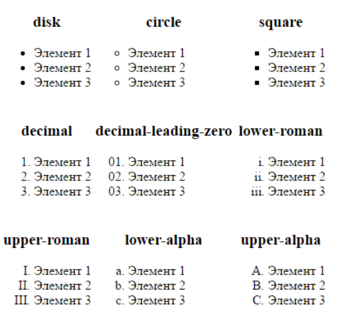
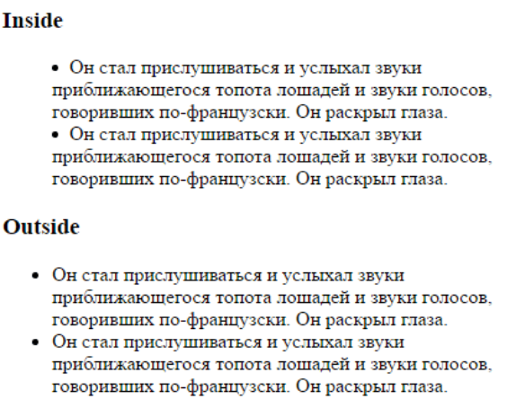
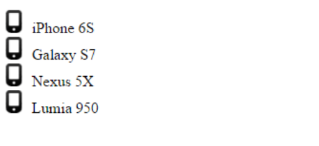

Стилизация списков
CSS предоставляет специальные свойства по стилизации списков. Одним из таких свойств является list-style-type.
Оно может принимать следующие значения для нумерованных списков:
- decimal: десятичные числа, отсчет идет от 1
- decimal-leading-zero: десятичные числа, которые предваряются нулем, например, 01, 02, 03, … 98, 99
- lower-roman: строчные латинские цифры, например, i, ii, iii, iv, v
- upper-roman: заглавные латинские цифры, например, I, II, III, IV, V…
- lower-alpha: строчные латинские буквы, например, a, b, c..., z
- upper-alpha: заглавные латинские буквы, например, A, B, C, … Z
Для ненумерованных списков:
- disc: черный диск
- circle: пустой кружочек
- square: черный квадратик
Например
ul{
list-style-type: square;
}

Чтобы вообще отключить маркеры у элементов списка, используется значение none:
ul{
list-style-type: none;
}
Данное свойство может применяться как ко всему списку, так и к отдельным элементам. Например:
<!DOCTYPE html>
<html>
<head>
<meta charset="utf-8">
<title>Стилизация списков в CSS3</title>
<style>
.decimal{
list-style-type: decimal;
}
ol{
list-style-type: lower-roman;
}
</style>
</head>
<body>
<ol>
<li>Элемент 1</li>
<li class="decimal">Элемент 2</li>
<li>Элемент 3</li>
<li>Элемент 4</li>
</ol>
</body>
</html>
list-style-position
Веб-браузеры обычно отображают маркеры списка слева от элементов списка.
С помощью свойства list-style-position мы можем настроить их позиционирование.
Это свойство принимает два значения: outside (по умолчанию) и inside (обеспечивает равномерное распределение по ширине).
<!DOCTYPE html>
<html>
<head>
<meta charset="utf-8">
<title>Стилизация списков в CSS3</title>
<style>
ul.outside{
list-style-position: outside;
}
ul.inside{
list-style-position: inside;
}
</style>
</head>
<body>
<h3>Inside</h3>
<ul class="inside">
<li>
Он стал прислушиваться и услыхал звуки приближающегося топота лошадей и звуки голосов...
</li>
<li>
Он стал прислушиваться и услыхал звуки приближающегося топота лошадей и звуки голосов...
</li>
</ul>
<h3>Outside</h3>
<ul class="outside">
<li>
Он стал прислушиваться и услыхал звуки приближающегося топота лошадей и звуки голосов...<
/li>
<li>
Он стал прислушиваться и услыхал звуки приближающегося топота лошадей и звуки голосов...
</li>
</ul>
</body>
</html>

list-style-image
Свойство list-style-image позволяет задать в качестве маркера изображение:
<!DOCTYPE html>
<html>
<head>
<meta charset="utf-8">
<title>Стилизация списков в CSS3</title>
<style>
ul{
list-style-image:url(phone_touch.png);
}
</style>
</head>
<body>
<ul>
<li>iPhone 6S</li>
<li>Galaxy S7</li>
<li>Nexus 5X</li>
<li>Lumia 950</li>
</ul>
</body>
</html>

Свойство list-style-image в качестве значения принимает путь к изображению url(phone_touch.png), где "phone_touch.png" - это название файла изображения. То есть в данном случае предполагается, что в одной папке с веб-страницей находится файл изображения phone_touch.png.